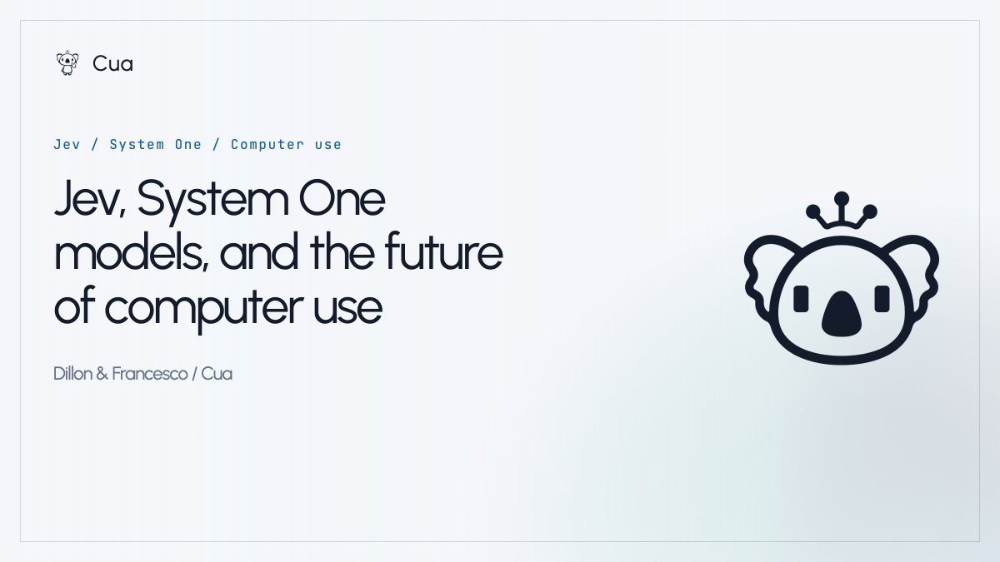
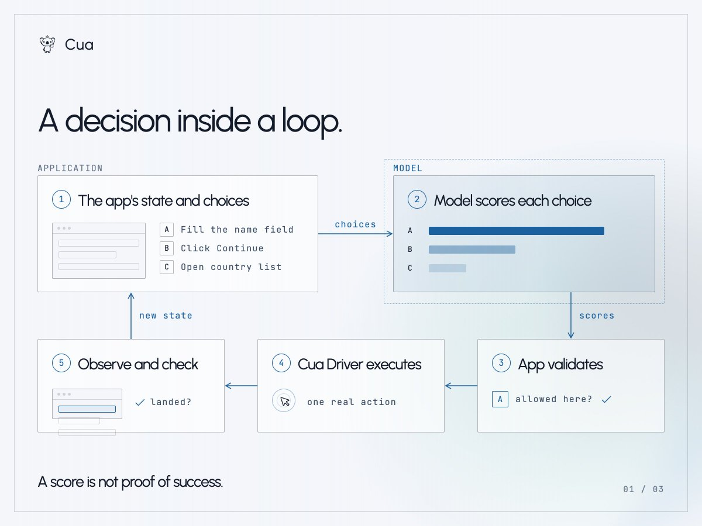
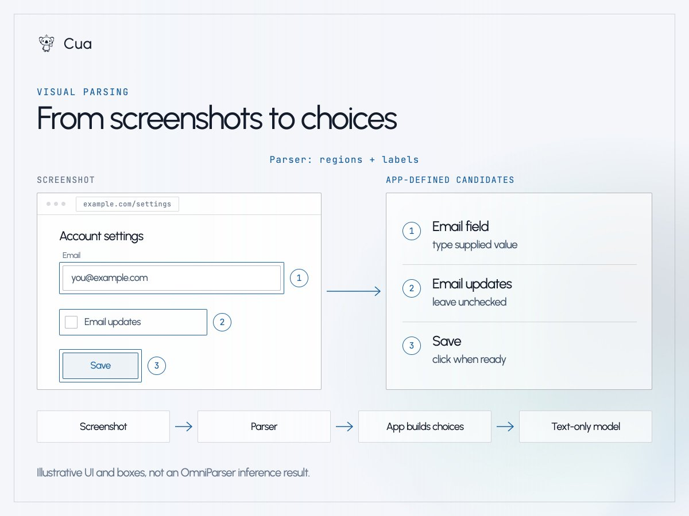
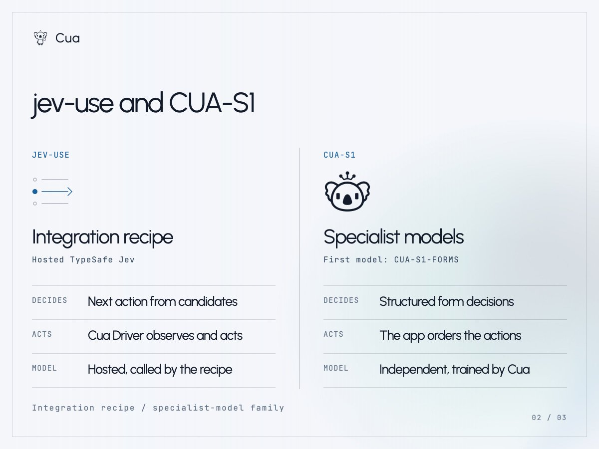
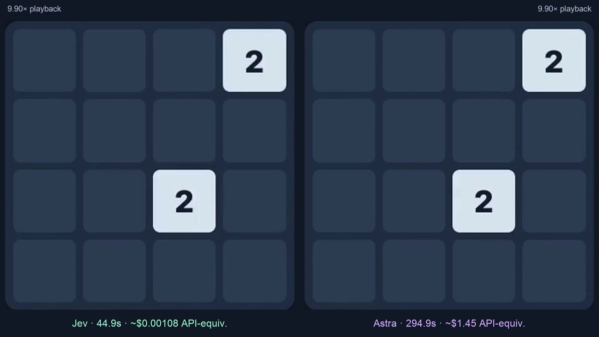
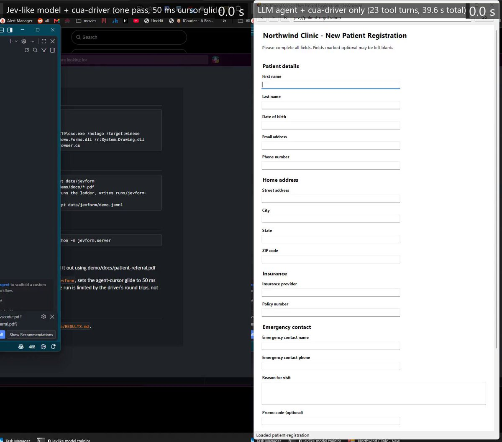
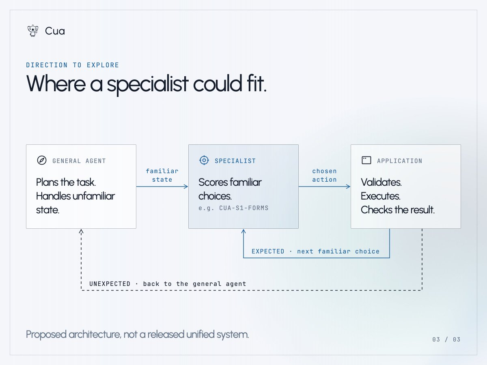

把一个电脑操作Agent拆开看，很多步骤并不是在生成，而是在一堆已经由代码定好的选项里挑一个。Cua试了两条路：用TypeSafe的Jev做判断，以及自己训一个70万参数的表单专才。
这是Cua团队围绕决策模型的一次实践记录，我们想知道的是一个具体问题：电脑操作Agent内部有多少决策，真的需要通用LLM。

在一个典型的LLM驱动Agent里，通用模型负责理解用户请求并决定下一步做什么。它可以制定计划、生成文本或代码，产出工具调用交给外围软件执行。出现意外时，Agent把新状态交给它重新判断。任务没有被完全预先定义时，这种灵活性很有用。
想象Agent走到一张表单前的场景。走到这一步可能涉及规划、探索，以及页面不按预期工作时的恢复。表单上的决策要局部得多：从文档里取到的这个值该填进这个字段吗？那个复选框已经勾上了吗？这个元素是不是应该放过？一种解法是再让LLM生成一次工具调用。我们想知道的是，如果模型只需要给应用已经定义好的选项打分，会发生什么变化。
我们要回答的是，整个流程里有多少环节真的需要这种通用灵活性。专才写不出缺失的说明，搞不定陌生的流程，也没法从每一次失败里恢复；但它可能在没有额外完整LLM调用的情况下，处理掉一个反复出现的判断。
Jev以文本为输入，其中包括描述当前状态的结构化文本，比如JSON，返回的是带类型的决策，而不是生成的散文或代码。TypeSafe的原语有三种形态：
● Choice从你提供的选项里挑一个。
● Score按照你定义的描述性档位给某个东西打分。
● Noul为一个是或否的问题估计概率。
通用LLM也能从一份列表里选择，并返回结构化输出或工具调用。区别不只是JSON和散文的不同。Jev暴露的是一个决策接口，而不是开放式文本生成接口：你提供上下文和要做的决策，拿回一个带类型的结果。
很容易把它读成Agent的动作选择，但这个接口更通用。路由一个请求、给候选排序、判断某个条件是否成立，这些都是有界选择上的决策，没有一项需要操作电脑。Jev可以待在编码流程里挑选下一个要调用的工具，尽管它不会写补丁。它今天也不截屏，所以任何视觉信息都必须先变成文本才能进入模型。
我们关心的循环是这样的：应用观察状态，构造出一份简短的允许候选列表；模型给这些候选打分；应用校验选中的结果，通过Cua Driver执行，然后观察新状态，确认实际发生了什么。

打分不等于动作真的成功了。校准描述的是预测在大量样本上的整体表现，而不是这一次点击是否正确，所以应用仍然必须自己去看结果。
Jev和我们当前的CUA-S1-FORMS模型都是纯文本的，两者都不看像素。具备视觉能力的通用模型可以直接吃下截图，纯文本的决策模型则需要一种它能读的表示。如果浏览器或应用暴露了有用的DOM或无障碍信息，应用可以直接使用这些结构化状态。但一个只给你截图的界面该怎么办？
微软的OmniParser是补齐感知这一步的一个有用例子。它把文字识别、界面区域检测和图标描述组合起来，把一张截图变成结构化元素：边界框、识别出的文字或图标描述，以及是否可交互的标记。应用代码可以用这些输出找出可能的控件，并构造候选。它仍然要自己判断出，比如Save这个词是不是属于一个可点击的按钮。

这些框本身并不构成决策空间。应用仍然要决定允许哪些动作，把提供的值附加上去，再给每个候选一个ID。之后纯文本模型才能给这些选项打分。如果它选中了Save这个候选，应用就把这个ID解析回当前目标，校验、点击，然后检查新状态。模型做这个具体选择时并不需要那张截图，它需要的只是对屏幕上内容的一份有用描述。
这种分离对我们有吸引力，因为感知和决策可以各自独立改进。它也给我们多了一个出错的位置：一个漏掉的控件或者一个错误的标签，可能在打分还没开始的时候就把决策带偏，而解析本身也会带来额外延迟。这是我们要探索的架构，不是我们在这里交付的OmniParser集成。我们的表单专才仍然需要一个适配器来对接它期望的输入，并在解析结果上做评估。
TypeSafe的命名呼应了Daniel Kahneman普及的那组区分：快速直觉的思考，与更慢、更审慎的思考。我们认为这个类比对框定工程问题有用，但仅此而已：它不是一套模型分类学。LLM并不自动就是System Two，小模型也可能做出错误的快速判断。分类器、排序器和学习到的策略已经在有界决策上做了几十年，Jev没有发明其中任何一项。它带来的是一个可用的决策接口：交上上下文和选项，拿回一个应用可以直接使用的决策。
当一个模型只被调用一次时，延迟和成本只是账单上的一行。当它在浏览器工作流的每一步都被调用时，盯着Agent的人会感受到每一次停顿，你也会开始注意到有多少工作其实是生成，又有多少只是在应用本来就能做的事情里做选择。
有时候正确答案仍然是一个脚本：如果一条规则稳定且明确，就把它写成规则。有意思的中间地带是，上下文每次运行都在变，而选项窄到足以打分。过去几天我们就在这个中间地带做了两个实验。

jev-use是一份公开预览版的集成配方，示例把托管在TypeSafe的Jev接到Cua Driver上。应用根据当前浏览器状态构造出具体的候选动作，每个动作都带一个ID。Jev选择一个ID。应用把它解析回预先定义好的动作，校验，然后请Driver执行。接着它再次观察页面并核验。

在LLM驱动的循环里，模型可能生成一个工具调用及其参数。在这份配方里，动作和参数已经存在于应用代码中，Jev只负责选一个ID。它无法凭空发明工具、坐标或参数。把候选菜单留在代码里，给了我们一个可以校验的边界，虽然这并不能免除构造好候选、以及察觉页面在你脚下发生变化这些难活。两种方案里都是Driver在执行动作，做决策的不是它。
示例包含一条确定性的mock路径，和一条使用你自己TypeSafe API Key的真实路径。mock证明的是循环的接线，不是真实模型的行为。它不是一个住在Driver里的新模型。
CUA-S1是我们的小型独立专才模型研究系列，CUA-S1-FORMS是第一个。Dillon借鉴了jevlike的思路和代码，训练出一个独立的表单专才。它不是Jev的微调，也没有复现TypeSafe的校准工作。
这个模型有706,048个可训练参数，原始checkpoint约2.8 MB。给定结构化的表单元素，加上已经从文档里抽取出来的值，它批量给每个元素打分：用这个提供的值、勾选、点击，还是跳过。元素之间独立打分，执行顺序由代码决定。它无法发明数值、读取截图，也不能在一个陌生应用里导航。当前发布的是一个以英文为中心的表单研究原型，不要指望它能可靠处理任意表单。

在把它和LLM Agent对比时，这个区别很重要。专才从表单元素和提供的值开始，它不做理解原始请求的活，也不做抽取这些值的活。通用LLM可以在更大的工作流里承担这些步骤，但那会是系统的另一部分，而不是CUA-S1-FORMS的能力。
Dillon在表单任务上的初次正面对比显示，专才的整体判定准确率为99.7%，托管Jev为83.6%。专才正是为这个任务训练的，包括跳过已填字段这样的约定，而托管Jev没有针对它做微调。这是一个狭窄实验中的决策层面结果，不是通用的电脑操作基准。
他最初的计时数字是本地表单打分7到9毫秒，托管Jev每次调用260到280毫秒，后者包含网络时间。两者度量的边界并不相同，一边是本地的一次前向传播，另一边是到托管服务的一次往返。它们不是受控的模型速度对比，也不是端到端的表单完成时间。
源码、权重和合成数据集在MIT许可下公开，模型卡涵盖了架构、评估和局限。
更快的决策解决不了缺失的感知、过期的状态、糟糕的候选菜单和长程规划。电脑操作Agent需要界面的一种可用表示，需要一种察觉页面已经变化的方式，也需要一种确认动作已经落地的方式。
我们希望探索的交接是这样的：通用LLM理解请求，并规划那些陌生的部分，包括走到表单、弄清楚需要哪些信息、在意外出现时恢复。它也可以在任务需要时从文档里抽取值，或者生成文本。当决策变得熟悉而狭窄，Agent就把它交给专才。应用代码施加约束、执行、检查。一个意外的对话框，或者一次失败的检查，会把控制权交回给LLM驱动的规划器。

这是一个方向，不是我们已经交付的统一系统。知道一个专才什么时候力不从心，本身就是个难题，而高分本身也不是这个问题的答案。
表单给了我们一个可测的有界任务。我们想知道这个思路还值得在哪些场景里一试。
如果你的公司有一项重复的电脑或浏览器工作流，每次运行的上下文都在变，而选项一直很窄，欢迎写信到hello@trycua.com告诉我们。这些是我们未来做CUA-S1专才时想看的任务。两个项目都放在trycua/cua仓库里。
TypeSafe Jev发布说明: https://typesafe.ai/blog/introducing-system-one-models-and-jev
TypeSafe原语文档: https://docs.typesafe.ai/primitives
jev-use集成配方: https://github.com/trycua/cua/tree/main/libs/cua-driver/examples/jev-use
CUA-S1模型卡: https://huggingface.co/cua-ai/cua-s1-forms
CUA-S1合成数据集: https://huggingface.co/datasets/cua-ai/cua-s1-forms
微软OmniParser: https://github.com/microsoft/OmniParser
Cua仓库: https://github.com/trycua/cua
参考：https://x.com/trycua/status/2101437979180904640